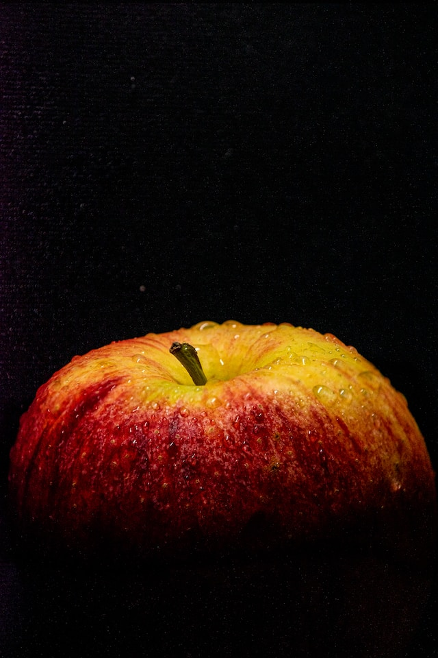

노란색은 시각적인 주목도를 높인다.

같은 검정색 배경 선상에서 빨간색과 노란색을 놓았을때, 빨간색은 시각적인 자극은 강하지만 주목도가 낮다. 반면에 노란색은, 뒤의 배경이 어두울수록 더 밝고 돌출되어 보이는 특징이 있다.
노란색이 다른 색들보다 명도대비가 높기 때문인데, 명도 대비가 높을 경우에 정비례적이게 주목도가 높아져서 어둡고 위험한 환경에서 보호, 안전과 같은 메시지를 강조 해야할 때 의미 전달이 확실해진다.
상징적 의미.
명도대비가 시각적인 전달도를 높이는 이유도 있지만, 예전부터 노랑 자체가 안전을 의미하는 색으로 사용되어왔다. 안전을 위한 주의, 경고 그리고 유치원, 병아리와 같이 어린 생명을 상징하는 색이기도 하다.